Wii Shop Hell: Vaporware
June 30, 2026
Greetings, the shop dummies of sorrow are here to revive the Wii Shop Channel of tomorrow. Be wary of the incompetent
New or you'll get hacked by Launch in a few. Continue reading if this rings a bell, for I have an everlasting story to tell.
...Okay I am not in the mood to continue rhyming so I'll just continue normally.
This blog goes over the failed shops only, the other part goes into WiiMart, which lived past a year.
This blog is mainly intended for outsiders who haven't experienced the hell that is Wii Shop revival Discord drama.
If you're someone that was in one of these communities, you'll probably see some stuff missing that you've seen.
Keep in mind that I joined Wii community Discords around December 2023, when I first got my Wii console.
Ready?
LaunchShop
While I was not here for this, someone did give me a screenshot of it.
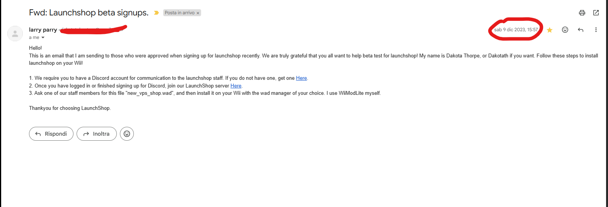
From December 9, 2023. Looks like it was in a private beta invite stage. I personally can't stand every niche
project's reliance on Discord and this shows it has been here since the beginning.
Later on I believe something happened inside the team and Rii Shop came to be.
Fin was the owner, and you'll hear more about him soon.
Rii Shop
One day I think I saw a video about it on YouTube while I was at school and joined their Discord server. I downloaded the
WAD and chatted with some people. Tons of people knew about it, even SpawnWave made a video about RiiShop, which was
probably the peak of the project. Below is likely the only screenshot I have of me being in it.
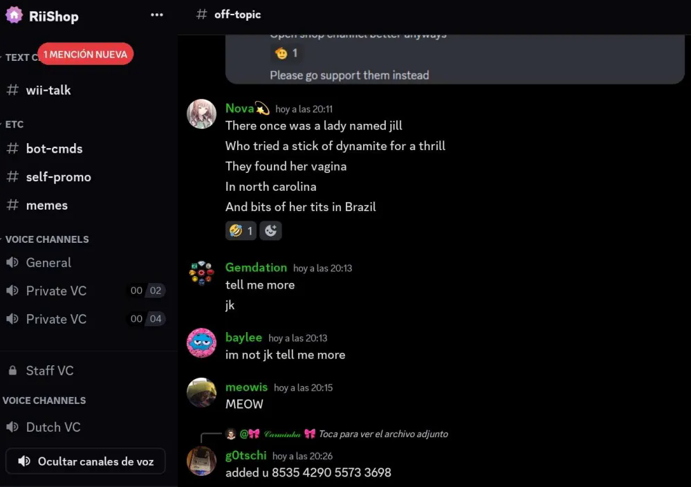
Not really the souvenir I wanted, but I'll keep it.
Shortly after, a leak happened and Larsenv, at the time, was the one at blame for it with WiiLink putting the project
on blast for the Wii console serial number leak.
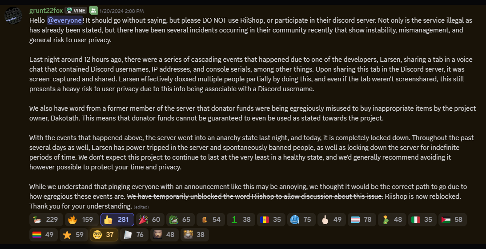
Here's a little more on the subject from someone.
Last night around 12 hours ago, there were a series of cascading events that happened due to one of the developers, Larsen, sharing a tab in a voice chat that contained Discord usernames, IP addresses, andconsole serials, among other things. Upon sharing this tab in the Discord server, it was screen-captured and shared. Larsen effectively doxxed multiple people partially by doing this, and even if the tab weren't screenshared, this still presents a heavy risk to user privacy due to this info being associable with a Discord username.
Chaos soon happened after that PSA. I don't think I got to see as I left the server, fearing that I would get in trouble.
What I did remember at WiiLink were tons of people were complaining, and all the YouTube videos made about it were suddenly outdated.
I didn't even get to use the project as I heard about, download the WAD on my phone, and forgot about it. Thought I did still have the WAD.
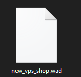
And there was nothing.
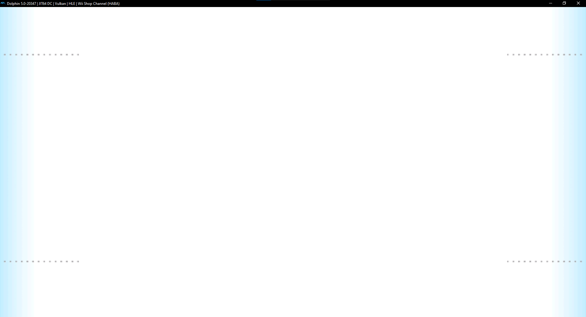
_ _ _ ★ _ _ _ _
Amongst the crowd of the dead shop, there was another revival in the making. This will come back later on in 2025, you probably know what it is.
Reviive
The private, yet known, Reviive Shop Channel was an in-progress revival made by Chris. He initially wanted
the project to be private, though he wasn't quite good at it along with the co-owner.
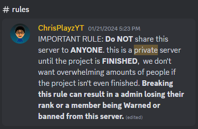
I was there! Right after Rii Shops' demise.
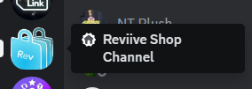
I was invited by a former friend who knew me from RiiShop. He was an admin there and invited me and somehow I ended up as mod,
and later admin!
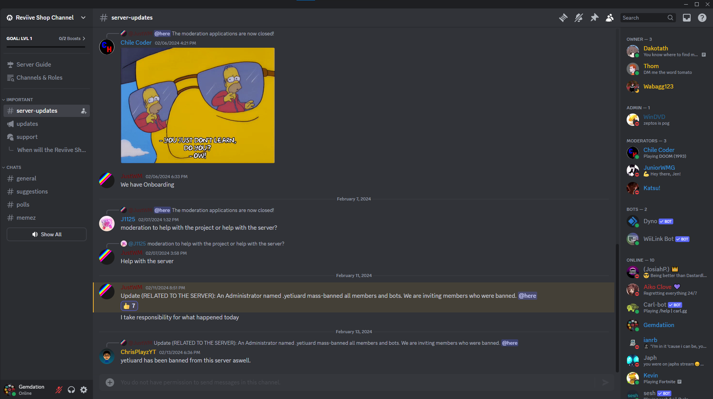
Here was a look at the announcements at the time. Not a good look to already get raided.
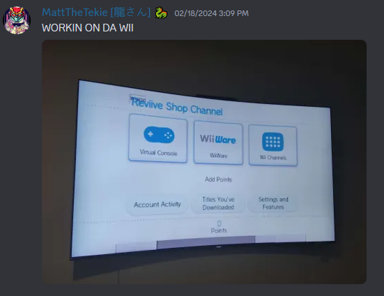
The owners weren't the best for a shop revival, I believe Chris only knew how to code on the frontend, while Thom
worked on the backend in Python and was quite an irrationally angry fella. One extra admin, MattTheTekie, did get the
shop working and made one of the few screenshots of it possible. He was probably an okay developer.
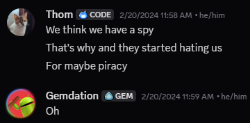
A few days later the co-owner was worried that 'WiiLink spies' were in the server to which, I doubted as they wouldn't really need to care.
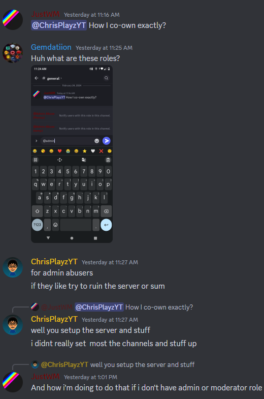
And even after that my friend got banned for "[trying] to ruin the server". I have no idea what happened to this day and WM left.
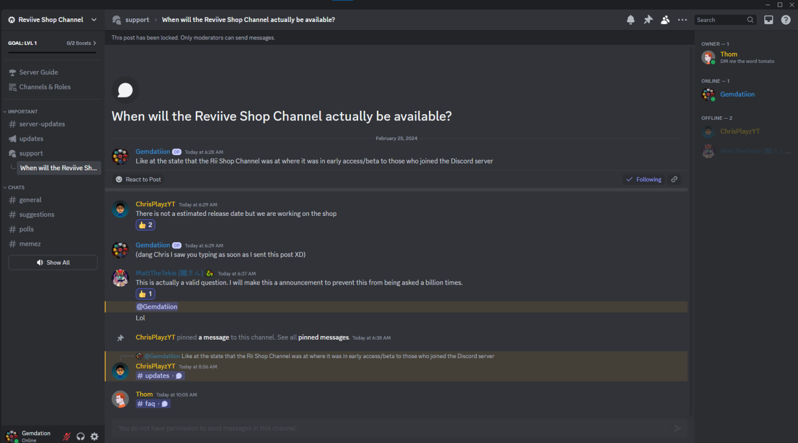
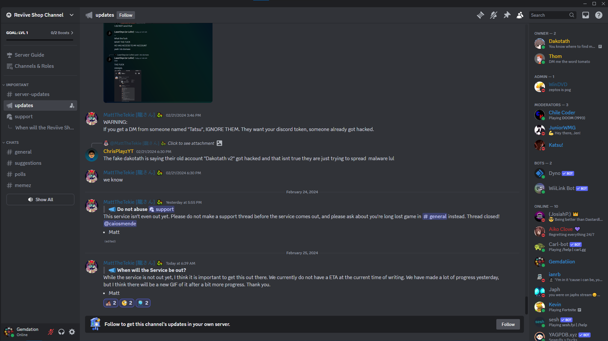
I asked when the project would actually be releasing as there was no ETA. Got Matt's message as an announcement for everyone else.
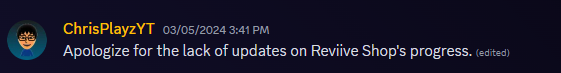
You're gonna see a pattern soon about these projects.
And the project brand as a whole was 'decorated' in a elementary school kinda of way, with glitter and everything.
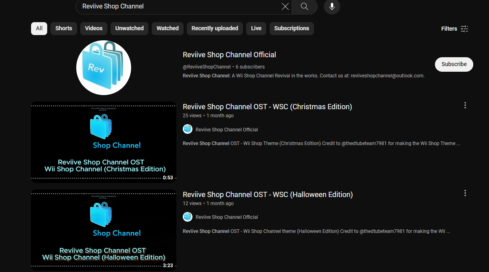
I remember getting so upset because the owner posted SVGs and audio files that flooded the announcements from actual service updates.
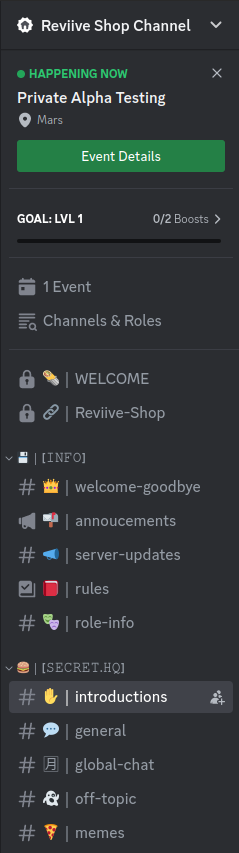
And around this time was when I really didn't like the server design because it had emojis and fonts at the time.
I didn't like it, tried to convince MattTheTekie to switch to stuff that won't interfere with general channel typing and
screen readers but he wasn't having it.
I left the server because it irritated me how much he got to make changes just without asking,
something that keeps on happening way beyond Reviive.
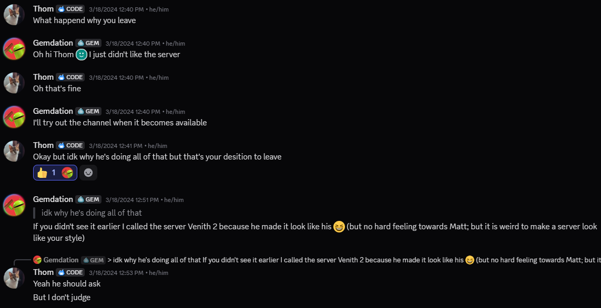
Skipping a bit of time, I joined back. The channel list was still an eyesore but not as much anymore.
Oh, and here is a hint of mismanagement to get in the mood for the next shop soon.
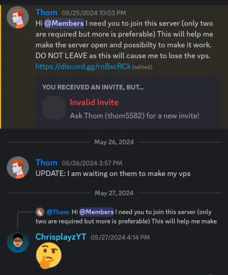
Anything to get a server, I guess. And them chatting in announcements always bugged me.
Whats New, Shop?
At the start of June 2024, I was told about my friend about another Wii Shop revival, the New Shop Channel.
And I was pretty relieved to hear about it as Reviive didn't look promising at all.
A bit after I even joined there was already drama. In announcements I got to hear about the issue with New Shop staff and some girl going by Lucia.
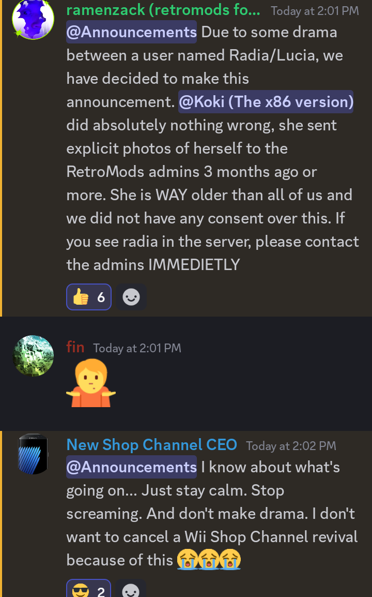
Let's keep this information in mind.
she sent explicit photos of herself to the RetroMods admins 3 months ago or more. She is WAY older than all of us and we did not have any consent over this. If
Anyhoo, I stayed in the server to chat with some fellas and even got to share my Wii accessory collection with the owner (TheWiiGuy). I remember his had the Wii Discs Lens Cleaning Kit, the Wii Discs Lens Cleaning Kit for crying out loud!
Here was the project roadmap at the time.
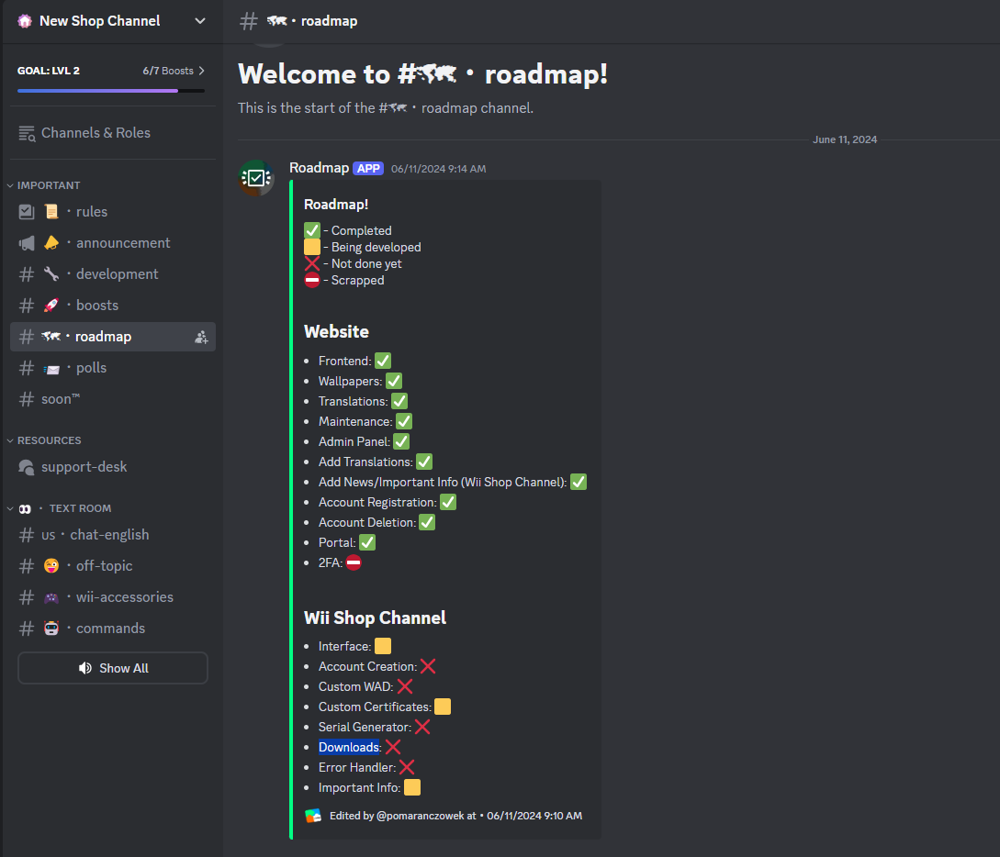
You might notice that the website is getting more work done than the actual shop itself. This will be a recurring issue seen later with many other shop projects.
A couple days later a vague demotion announcement was made because of a web developer.
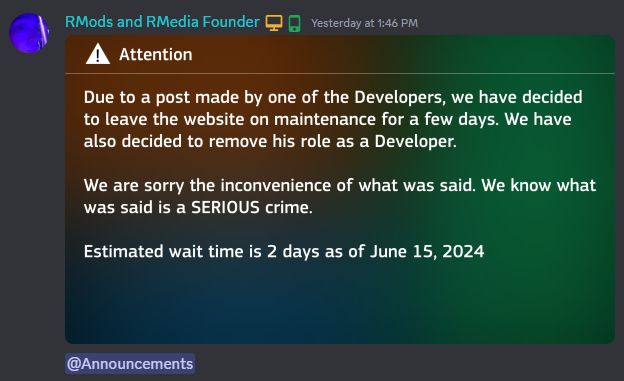
The message was what I believe to be a rape joke. I don't know exactly who this was but I think it might be Fin, since I do remember Fin was the website hoster.
Right at dawn, Fin pinged @everyone to compare himself with TheWiiGuy.
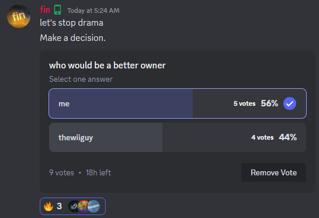
He later gave more info about TheWiiGuy, which revealed to everyone that he really doesn't know how to code for a revival like this.
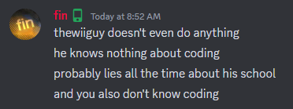
The "you" in the message was likely towards another New Shop staff member.
And around this time I was feeling pretty down about this project. And you know what happened next? I had fun.
I was looking around the server for loose ends in permissions and I luckily found the announcements channel.
It had a bit of an oversight because the @everyone role had permissions to Manage Messages. Guess what happened next?
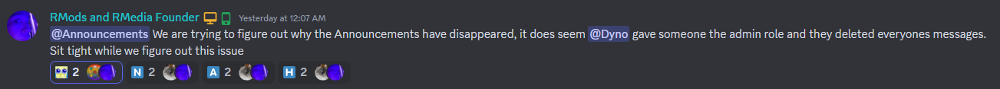
I still remember that night, I was watching ElectroBOOM in the background while deleting every announcement message on my alt account. I was even shaking thinking I was gonna get caught in the middle of it but I didn't!
With Fin's arrogant poll, and the announcements wipe, the server went into mass hysteria. I remember there was a person with a purple Mii profile that was like "THIS IS WHY A SHOP REVIVAL CAN NEVER HAPPEN".
Soon came the abrupt ending of New Shop Channel.
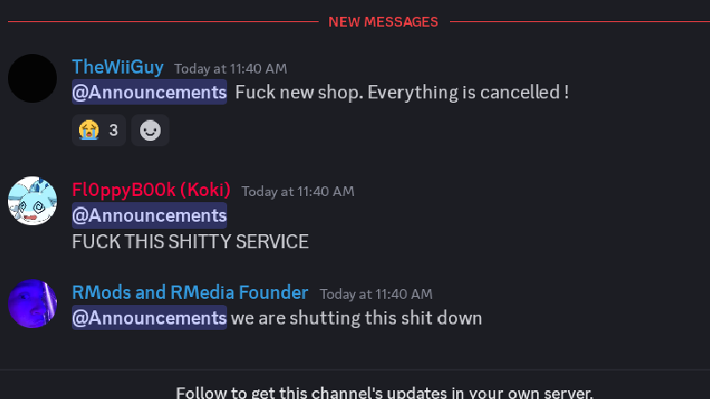
An ominous teaser would appear on New Shop's website, as if the project didn't just have one of the most catastrophic endings a Discord server can have.
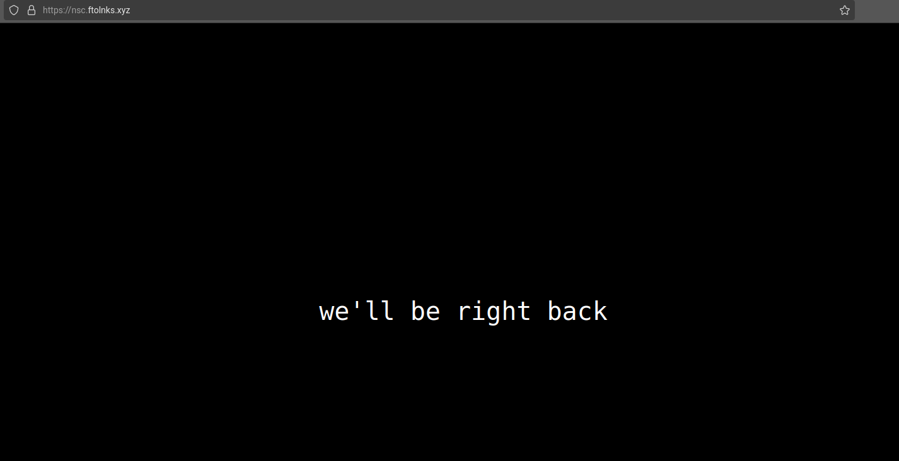
This message, placed by Fin, would go on to be nothing.
Return to Reviive
Going back to the old Reviive, disappointed of my hopes of another shop falling out of the sky.
I didn't even have my Member role!
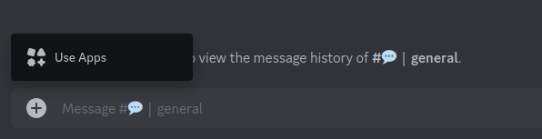
Unknown to me, TheWiiGuy (likely) made another New Shop Channel Discord server. To which LaunchShop staff would seem to raid.
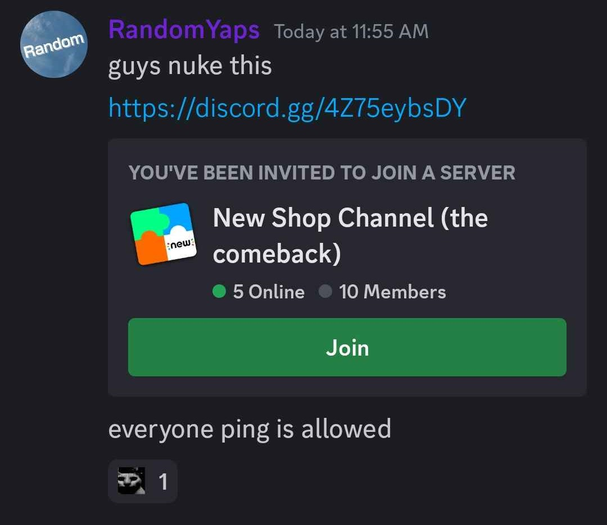
Oh, and I did get my staff role back at Reviive.
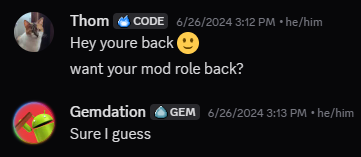
I believe before this time Dakotath was already working on another Rii Shop, this would be Rii Shop's reincarnation.
They likely left Reviive to work on it.
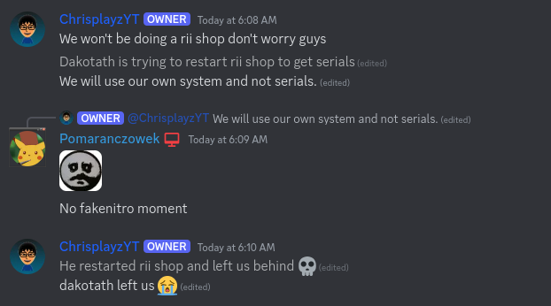
For an odd reason, Reviive 2.0 existed.
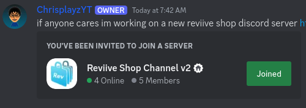
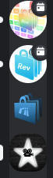
When I asked him, it was because the server was 'a mess'. I denied and I think I even offered to fix it.
Here was what my server list for vaporware projects looked like. Reviive, Reviive 2.0, Rii Shop 2, and the project that shall not be named.
And about Rii Shop 2, it was an Open Shop Channel alternative made out of pettiness, you know, the only project that was still proven to be stable.
By no means have a working Wii Shop client, but it is hard to do.
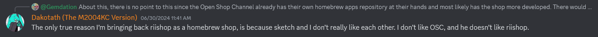
Reviive would still go on despite everything. Thought I didn't like their reliance on Google Drive instead of GitHub.
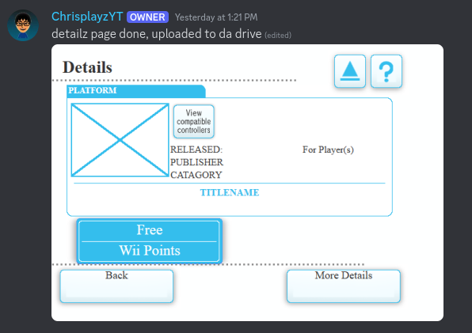
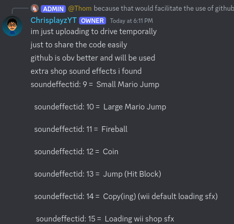
And a couple screw-ups here and there, though nothing serious.
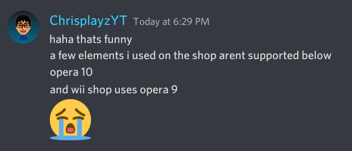
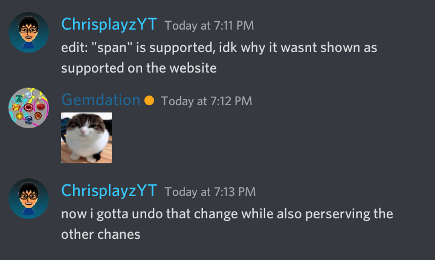
At some point Fin joined Reviive and here was what the website looked like with him. If you'd like to visit this page, you can see the archived snapshot here.
The new website's cookier cutter bootstrap design was a bit of a precursor to LaunchShop.
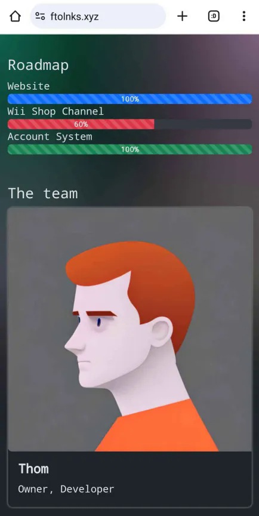
And one time I got into it with Lucia because of her bot,
which had rule34 commands, on to a server full of probable minors. I had a problem with it because it is very degenerate content in a server of kids.
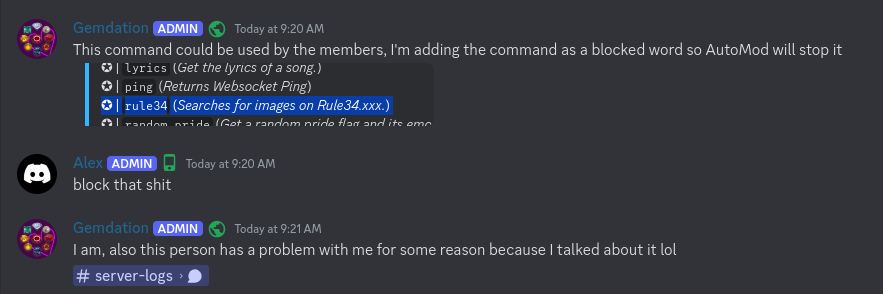
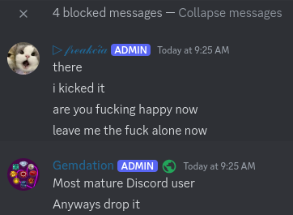
Even if they were now disabled, I wouldn't hold a sign that says "rule34" to a child. You think?
Then some more drama happened. I found these images and I assume a disagreement happened.
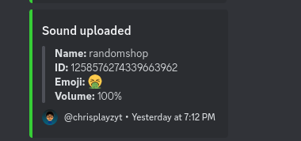
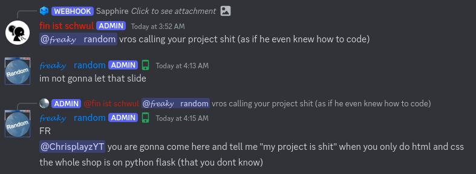
Still, Reviive kept going and I got to see some retro-looking login pages.
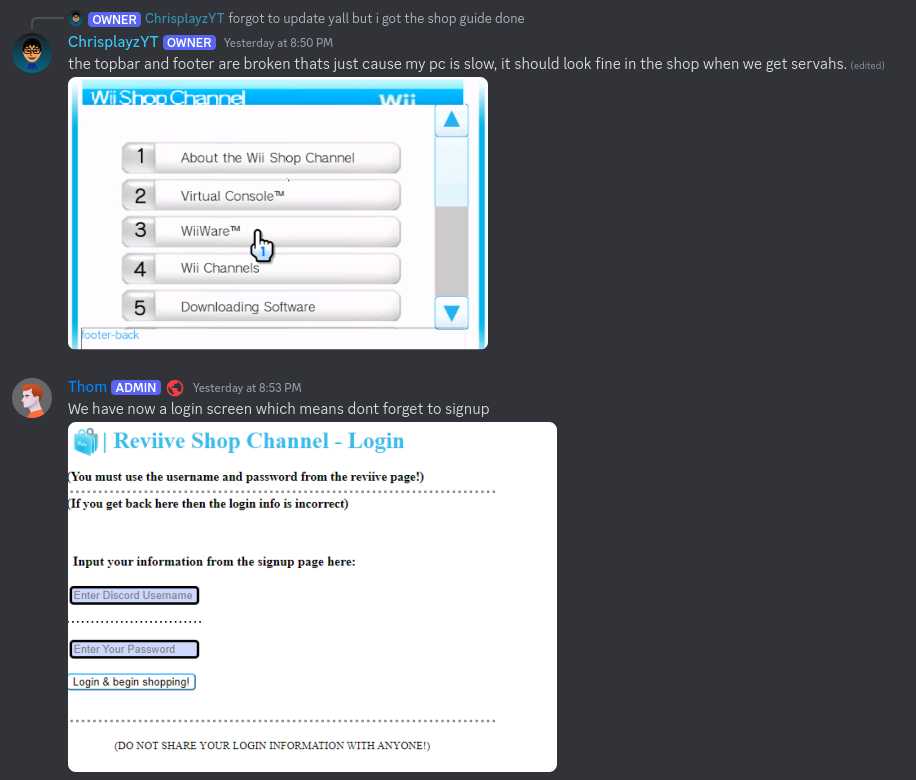
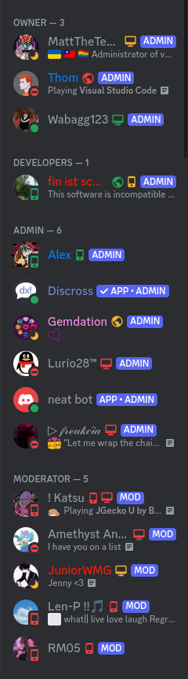
Here is what the member list looked like as of July 7, 2024. See that Lurio fellow? I think at this point the collaboration with him for his DSi Shop project.
Yup, Reviive was going to have a DSi Shop sub-project via DSi Shop++. And one some point later they had channels as if they were reviving the 3DS eShop and the Wii U eShop.
Presumably another disagreement happened, which led to Fin, RandomName, and Alex getting banned from Reviive.
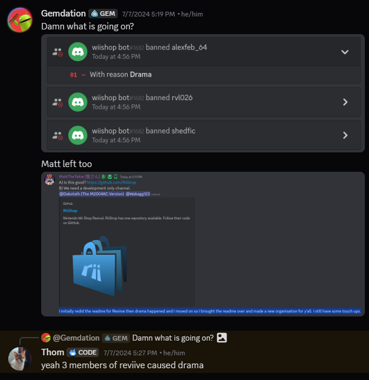
Even then, and I kid you not, Reviive had a login page! Seems oddly simple but I was looking for scraps at this time.
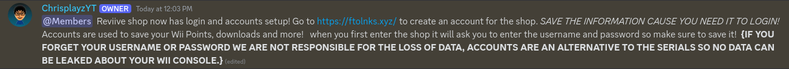
It was very annoying to type in my Reviive account password everytime using that Wii keyboard.
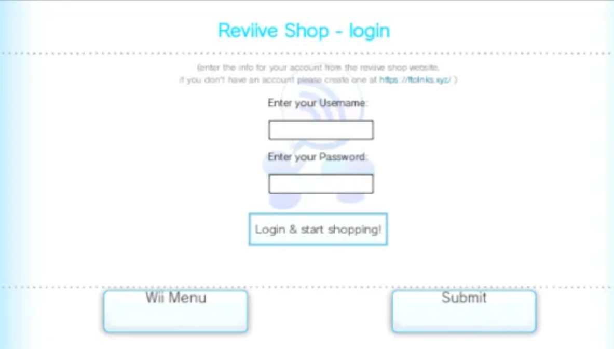
At some point, Reviive backpedalled on being a true Wii Shop revival.
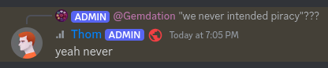
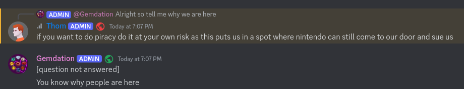
Message from RiiShop 2, I should mention that Matt was also talking about "legal issues".
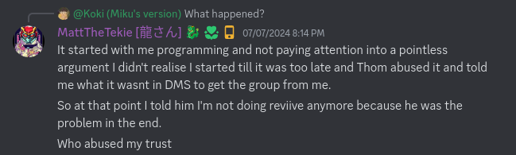
Why do I feel like Thom told Matt later about Reviive being a piracy service and now that he's gone, the service would be piracy-fee? Just a conspiracy, though.
And here is a random Fin-Chris interaction I have saved. They always hated each other.
At some time, the breaking point happened and Fin was going to leave on July 23, 2024.
And so it did. I believe at this point Fin was working solely on LaunchShop 2.
A bit of truth from ramen.
Community of Rii Shop 2
On a little side tangent, two people were runnning a muck in the second Rii Shop.
On this corner we have social recluse, someone who stole artwork and lied about it being their own to get onto the Rii Shop 2 icon.
Wasn't happy about getting caught.
The same person also caught Thom's IP address, located him and called it a "poverty".
And in this corner we have 7GG, British-based Muslim. He's got quite the mouth that ended up getting him suspended at Reviive.
It would quickly get removed, though.
I'm not sure as to why it happened. I'm looking at the messages right now like "you're still keeping him?"
I wonder who did.
And that social recluse guy is a handful who ended up getting super pissed at my friend for reporting his IP grabber website to its hoster.
Reviive-LaunchShop war
Side tangent over and it is now August 16, 2024, again. This war is a kiddie war between two nothing-shops, and I was member of both.
I don't remember exactly what this was but I believe it was about seperating the
Oh, and emilydaemon...
This wasn't the first time she had gotten into shop revival servers to only get banned, New Shop and Rii Shop 2 had their daemon visits.
Though I understand this reason for Reviive, as it seems Thom just took code. Which...I'll tell you when you see it later.
Reviive still had its login screen, the one that was annoying to sign into because of the Wii Keyboard. I contacted Thom to reset my
password and apparently I had to manually encrypt it myself and send it to him.
Granted, this feels like a good faith gesture rather than having unecrypted serials, which I saw later in 2026.
With my new password, logging in wasn't so bad I even took some screenshots on Dolphin.
Pretty neat, right? It was a few clicks from getting into an error screen, but it relit my hope in Reviive.
Let's dive a bit into LaunchShop 2. The staff were Fin, RandomName, and Erison.
Their community was, as always with these, chaotic.
At a time where the shop looked promising, the people flocked.
And on the topic of the community, the owner wasn't keen on Reviive, of course.
And was a bit of an ass.
everyone really trusts new shop channel 2, i see
I find this comment ironic due to LaunchShop's nature of not showing screenshots of what they've done.
With Reviive, I saw so many edited HTML pages and you mean to tell me LaunchShop thinks it is vaporware when they haven't even done the core work yet?
Back at Reviive, Chris was having a bit of a copyright goof and-Hey, who is that?
That person...
Must be nothing, and at this time my hope was starting to dwindle again. I got so desperate I asked MarioCube via email if they will make a homebrew app downloader, not even a Wii Shop revival.
Back on the topic of Reviive, here are some screenshots of its pages being ran in an old browser. It seems that one of the developers accounted for making it work with only old Opera browsers.
One thing I notice with most revivals I see is that they blatantly copy oss-auth's HTML pages. They don't even attempt to take the notice off.
Let's set the stage for this next act.
Trojan Launch
For a reason unbeknownst to me, Erison and RandomName got into Reviive as staff members. Staff members!
I still have no idea why you would put your enemy project in power of your own but I guess their tricks were good.
In just a moment, only a moment, the entire server members were banned.
In the background also, the entire domain of dakotath.com was wiped. Files and all!
I got one of my friends unbanned and took one of the only screenshots of Reviive's server roles seen here.
It was so chaotic and hard to look at, like a train wreck.
We were trying to get Chris online but he didn't respond to the countless pings we did. And when he did, his response wasn't as shocked as we were.
And then I received a ping in LaunchShop that finally told me what was going on.
I mean, Rii Shop had worse, but dang. Wipe everything?
...
Additional screenshot from what I think is after the raid.
Onto Gift Shop Channel!
Gift Shop Channel
In what I think to be the same day as the raid (September 9, 2024), Gift Shop was made. I promptly set up the channels and roles and word got around quickly of the new Gift.
By this point I was so fustrated with Wii Shop revivals so I made my own! Just kidding, this was made in PowerPoint.
A few days later I did make an actual picture defaming Wii Shop revivals.
Back to Gift, Thom was taking no chances with another spy from Launch Shop. He was making the new GiftAuth app to detect what servers people were in.
If presumably alerts Thom if you were in the LaunchShop server.
Skipping some days (now September 18, 2024), Here's an image I saved of Thom getting angry at us for goofing off.
Since we still had Dakotath, we got to host a website under him. I think it was an account system for Gift Shop that signed in with Discord.
And here's an image of a Gift Shop page appearing on a Wii console.
On the Launch side, LaunchShop was still going on.
And back on the Gift side, things were...unprofessional, I guess.
A little before the downfall, a mini raid happened with bots that tried to ping everyone. Apparently Erison still couldn't get enough and had one of Launch staff's help to get in.
Ready for this? Not this one specifically caused the downfall, that one would be Thom.
And here's the fella himself. Right in an announcement channel.
This caused a heated conversation that I believe led to the deletion of the message.
We were told that some person told him to say it, and said person was Dakotath.
I got so tired of dealing with these so I just left Launch and Gift Shop, then out of literally no where...
Guess you need me, huh? Kidding but I actually wonder if I was a support beam. I bet LaunchShop was celebrating.
If you're reading in order, then Wii Shop Hell: What Now? should be read next.